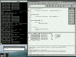

Gavare's eXperimental Emulator:
GDB remote serial protocol connection
|
|
Back to the index
GDB remote serial protocol connection
Introduction:
Starting with release 0.4.0, GXemul has (very rudimentary) GDB serial
protocol support. This means that you can start up GDB, or a front-end
program which in turn uses GDB, and connect it to a running GXemul
instance.
The GDB front-end I use in this example is the Data Display Debugger (DDD).

The screenshot above shows DDD connected to GXemul, running the Hello
World demo program compiled for mips64-unknown-elf, on a FreeBSD/amd64 host.
Prerequisites:
You can still run a bare GDB session without a GUI front-end if you like.
Example session:
- Start up GXemul, and tell it to wait for an incoming GDB connection
on a certain port:
# gxemul -x -E testmips -G 10000 hello_mips
- Start the DDD, using a GDB configured for this specific target,
and also give the name of the binary/kernel. (This binary
should have been compiled with -g.)
# ddd --debugger mips64-unknown-elf-gdb hello_mips
- At the (gdb) prompt in DDD, type:
(gdb) target remote localhost:10000
- Press F9 (Continue) to start. Press ESC when you wish to interrupt.
You can also use F5 (Step) to single-step one instruction at a time.
Notes:
- The remote GDB functionality in GXemul is quite hack-ish, very
unstable, very slow, and does not support any fancy features
such as breakpoints or watchpoints yet.
- For 64-bit MIPS targets, you might have to fiddle with
MIPS-related GDB settings, to make GDB send correct commands
to GXemul. Otherwise, GDB only sends the lowest 32 bits
of memory addresses, which is incorrect.
- When remote-debugging PowerPC targets using DDD, you might have to
press F9 twice to get it to start. I am not sure why.
{kind=link}